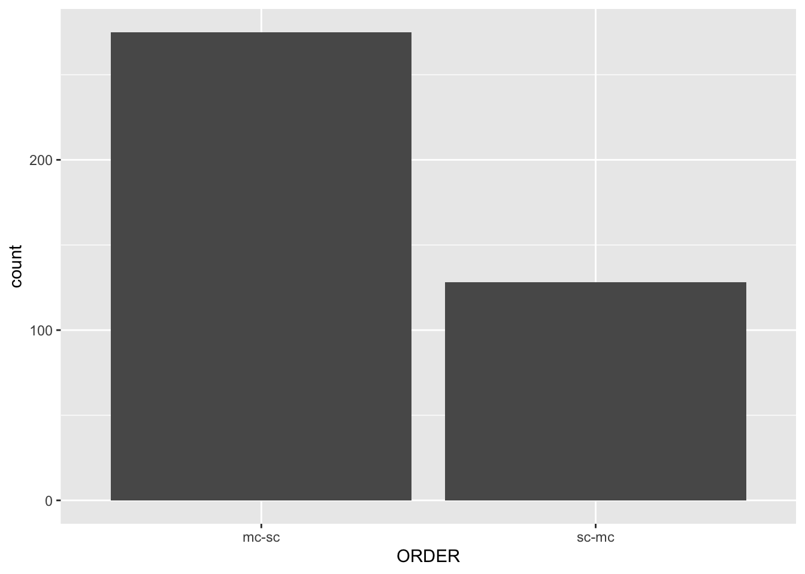
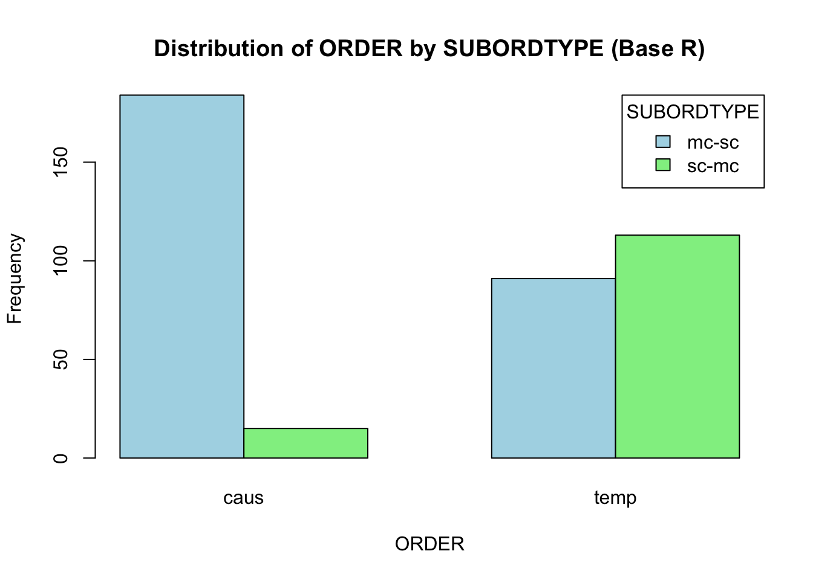
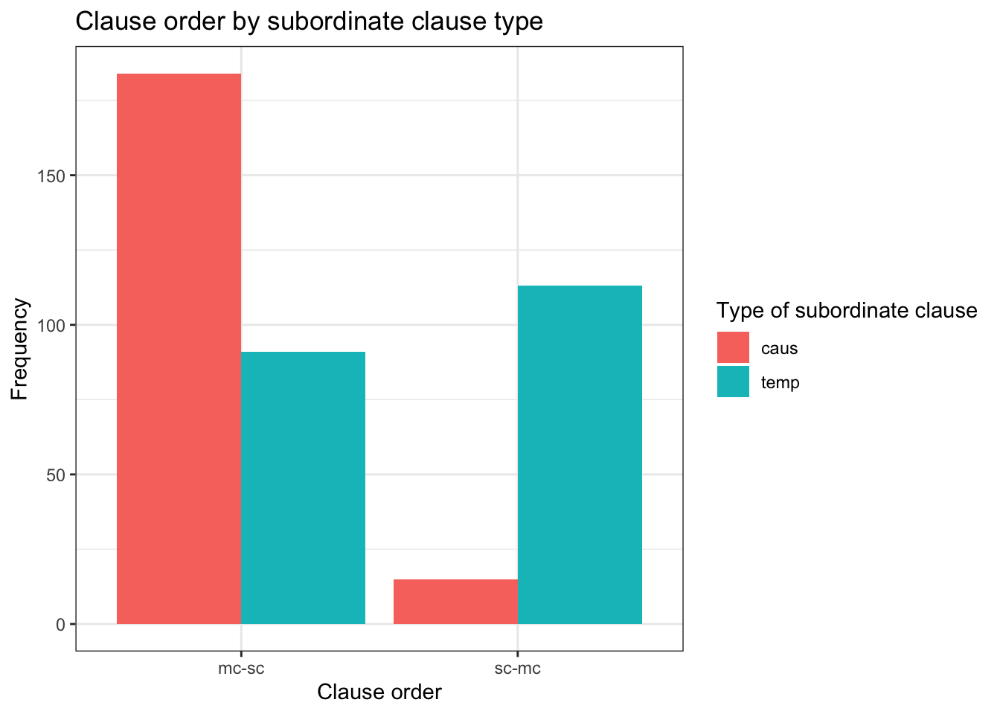
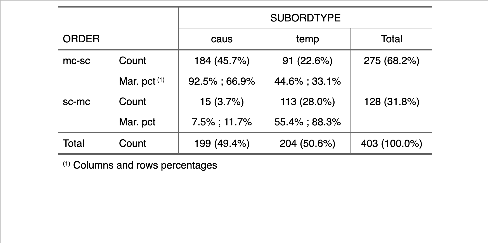

# Libraries
library("readxl")
library("tidyverse")
# Load data from working directory
cl.order <- read_xlsx("Paquot_Larsson_2020_data.xlsx")8 Describing categorical data
8.1 Preparation
Please download the file “Paquot_Larsson_2020_data.xlsx” (Paquot and Larsson 2020)1 and store it in the same folder as your currently active R-script.
It contains the dependent variable
ORDER: Does the subordinate clause come before or after the main clause? (‘sc-mc’ vs. ‘mc-sc’)
… and the independent variables:
SUBORDTYPE: Is the subordinate clause temporal or causal? (‘temp’ vs. ‘caus’)MORETHAN2CL: Are there most clauses in the sentence than just one subordinate clause and one main clause? (‘yes’ vs. ‘no’)LEN_MC: How many words does the main clause contain? (ratio-scaled continuous variable)LEN_SC: How many words does the subordinate clause contain? (ratio-scaled continuous variable)LENGTH_DIFF: What is the length difference in words between the main clause and subordinate clause? (ratio-scaled continuous variables)
8.2 Descriptive measures
The easiest way to get a general overview of the full data set is to apply the str() function to the respective data frame.
str(cl.order)tibble [403 × 8] (S3: tbl_df/tbl/data.frame)
$ CASE : num [1:403] 4777 1698 953 1681 4055 ...
$ ORDER : chr [1:403] "sc-mc" "mc-sc" "sc-mc" "mc-sc" ...
$ SUBORDTYPE : chr [1:403] "temp" "temp" "temp" "temp" ...
$ LEN_MC : num [1:403] 4 7 12 6 9 9 9 4 6 4 ...
$ LEN_SC : num [1:403] 10 6 7 15 5 5 12 2 24 11 ...
$ LENGTH_DIFF: num [1:403] -6 1 5 -9 4 4 -3 2 -18 -7 ...
$ CONJ : chr [1:403] "als/when" "als/when" "als/when" "als/when" ...
$ MORETHAN2CL: chr [1:403] "no" "no" "yes" "no" ...This shows us that the data frame has 8 columns, as the $ operators indicate ($ Case, $ ORDER, …). The column names are followed by
the data type (
numfor numeric andchrfor character strings)the number of values (
`[1:403]`) andthe first few observations.
Another intuitive way to display the structure of a data matrix is to simply show the first few rows:
head(cl.order)# A tibble: 6 × 8
CASE ORDER SUBORDTYPE LEN_MC LEN_SC LENGTH_DIFF CONJ MORETHAN2CL
<dbl> <chr> <chr> <dbl> <dbl> <dbl> <chr> <chr>
1 4777 sc-mc temp 4 10 -6 als/when no
2 1698 mc-sc temp 7 6 1 als/when no
3 953 sc-mc temp 12 7 5 als/when yes
4 1681 mc-sc temp 6 15 -9 als/when no
5 4055 sc-mc temp 9 5 4 als/when yes
6 967 sc-mc temp 9 5 4 als/when yes 8.2.1 Frequency tables
8.2.1.1 One variable
Each categorical variable is made up of two or more categories. A simple descriptive measure is the frequency of each category. The table below indicates how often each clause order occurs in the data.
order_freq1 <- table(cl.order$ORDER)
print(order_freq1)
mc-sc sc-mc
275 128 The notation cl.order$ORDER subsets the cl.order according to the column ORDER (see data frames).
Alternatively, you could use xtabs() to achieve the same result – perhaps with a slightly more intuitive syntax.
order_freq2 <- xtabs(~ ORDER, cl.order)
print(order_freq2)ORDER
mc-sc sc-mc
275 128 8.2.1.2 Two variables
If we are interested in the relationship between multiple categorical variables, we can cross-tabulate the frequencies of their categories. For example, what is the distribution of clause order depending on the type of subordinate clause?
order_counts1 <- table(cl.order$ORDER, cl.order$SUBORDTYPE)
print(order_counts1)
caus temp
mc-sc 184 91
sc-mc 15 113Here is the xtabs() alternative:
order_counts2 <- xtabs(~ ORDER + SUBORDTYPE, cl.order)
print(order_counts2) SUBORDTYPE
ORDER caus temp
mc-sc 184 91
sc-mc 15 113
How do I obtain percentages?
There are two ways to convert the raw frequency counts to percentage tables:
- Manually divide all cells by the total number of observations (which correspond to the sum of all cells) and multiply the result by 100.
pct1 <- order_counts1/sum(order_counts1) * 100- Use the
prop.table()function and multiply the result by 100.
pct2 <- prop.table(order_counts1) * 1008.3 Visualising categorical variables
This section demonstrates both the in-built plotting functions of R (‘Base R’) as well as the more modern versions provided by the tidyverse package.
8.3.1 One variable
- Base R barplot with
barplot(); requires the counts as computed bytables()orxtabs()
barplot(order_freq1) # Supply the counts
- Barplot with
geom_bar()using the raw input data
library(tidyverse)
ggplot(cl.order, aes(x = ORDER)) +
geom_bar()8.3.2 Two variables
- Barplots with the
fillargument
barplot(order_counts2,
beside = TRUE, # Make bars side-by-side
legend = TRUE) # Add a legend
barplot(order_counts2,
beside = TRUE, # Make bars dodged (i.e., side by side)
main = "Distribution of ORDER by SUBORDTYPE (Base R)",
xlab = "ORDER",
ylab = "Frequency",
col = c("lightblue", "lightgreen"), # Customize colors
legend = TRUE, # Add a legend
args.legend = list(title = "SUBORDTYPE", x = "topright"))
library(tidyverse)
ggplot(cl.order, aes(x = ORDER, fill = SUBORDTYPE)) +
geom_bar(position = "dodge")
library(tidyverse)
ggplot(cl.order, aes(x = ORDER, fill = SUBORDTYPE)) +
geom_bar(position = "dodge") +
labs(
title = "Clause order by subordinate clause type",
x = "Clause order",
y = "Frequency",
fill = "Type of subordinate clause"
) +
theme_bw()
How do I plot percentages?
In Base R, very much the same way as with the raw counts:
barplot(pct1,
beside = TRUE, # Make bars side-by-side
legend = TRUE) # Add a legend
In ggplot2, a few tweaks are necessary. In general, ggplot2 only works with data frames and not with table objects, so we’d have to convert it to one first:
pct1_df <- as.data.frame(pct1)
print(pct1_df) Var1 Var2 Freq
1 mc-sc caus 45.657568
2 sc-mc caus 3.722084
3 mc-sc temp 22.580645
4 sc-mc temp 28.039702Now we can plot the percentages with geom_col(). This geom (= ‘geometric object’) allows us to manually specify what should be mapped onto the y-axis:
library(tidyverse)
ggplot(pct1_df, aes(x = Var1, y = Freq, fill = Var2)) +
geom_col(position = "dodge")8.4 Exporting tables to MS Word
Publication-ready tables can be generated with the help of the flextable package. The full guide can be found here.
library(flextable)
output_1 <- as_flextable(pct1)
print(output_1)
The rempsyc also provides a simple way of creating beautiful, export-ready tables. You can find the documentation here.
library(rempsyc)
# Format table
output2 <- nice_table(pct1_df)
print(output2)
# Export to Microsoft Word
print(output2, preview = "docx")